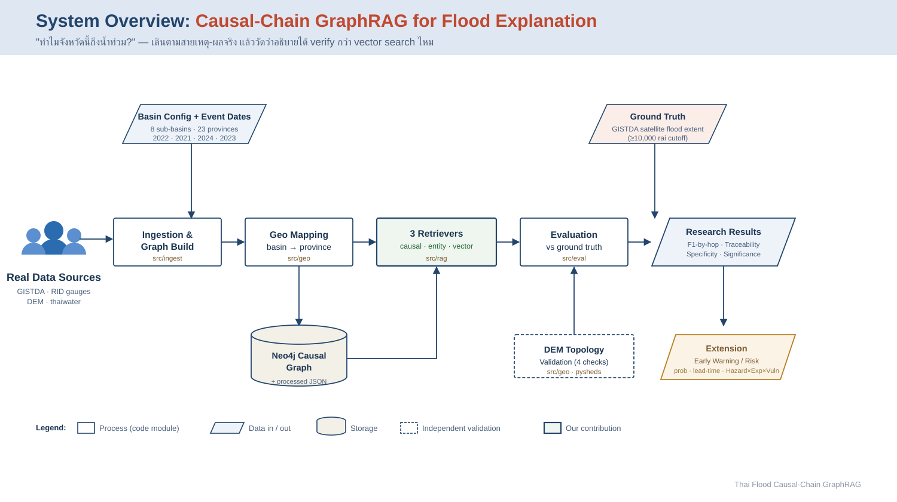
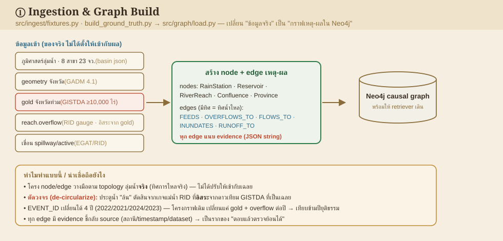
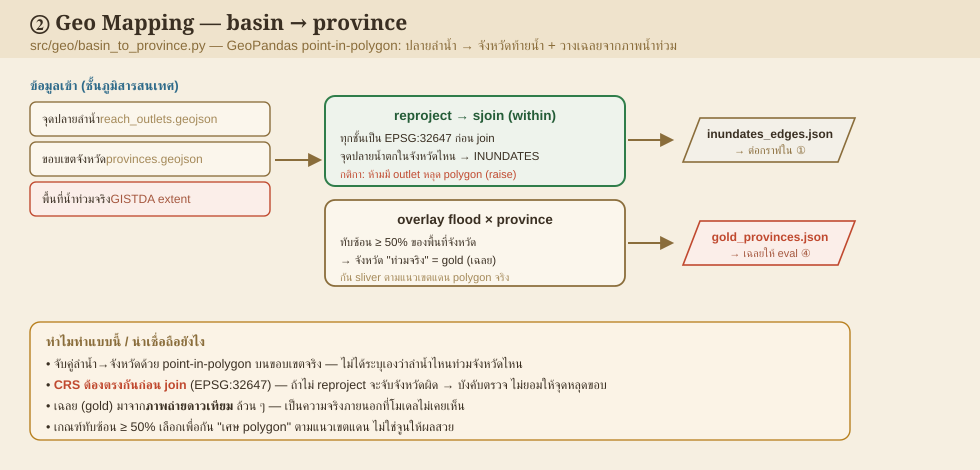
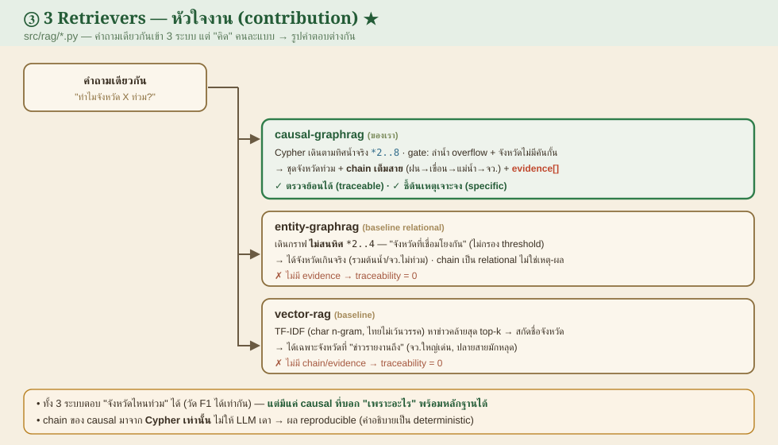
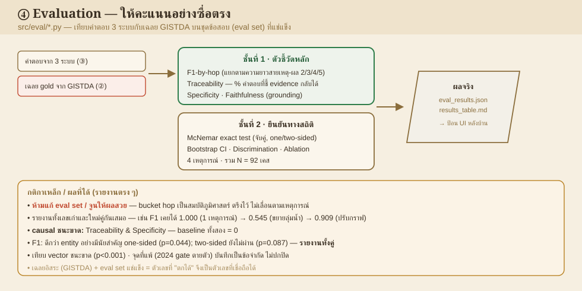
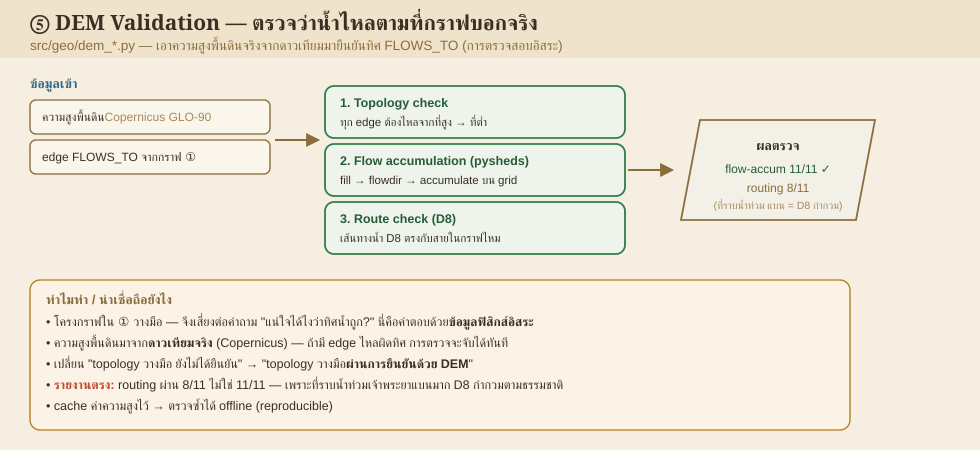
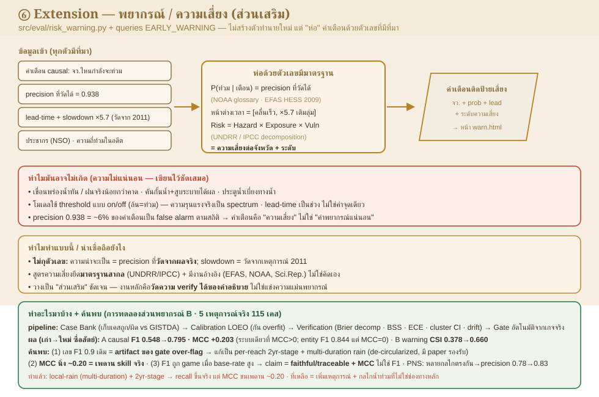
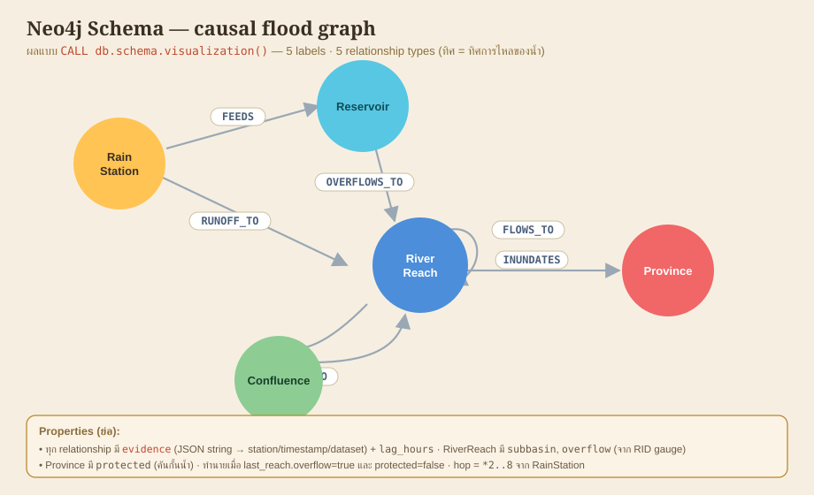
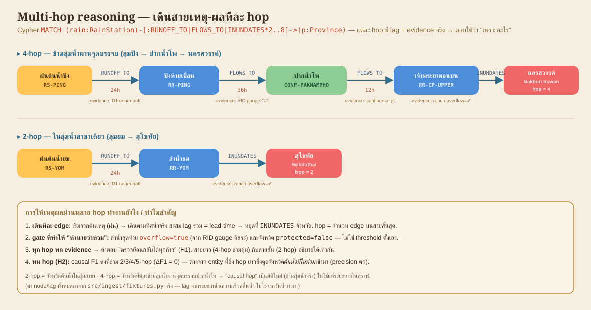
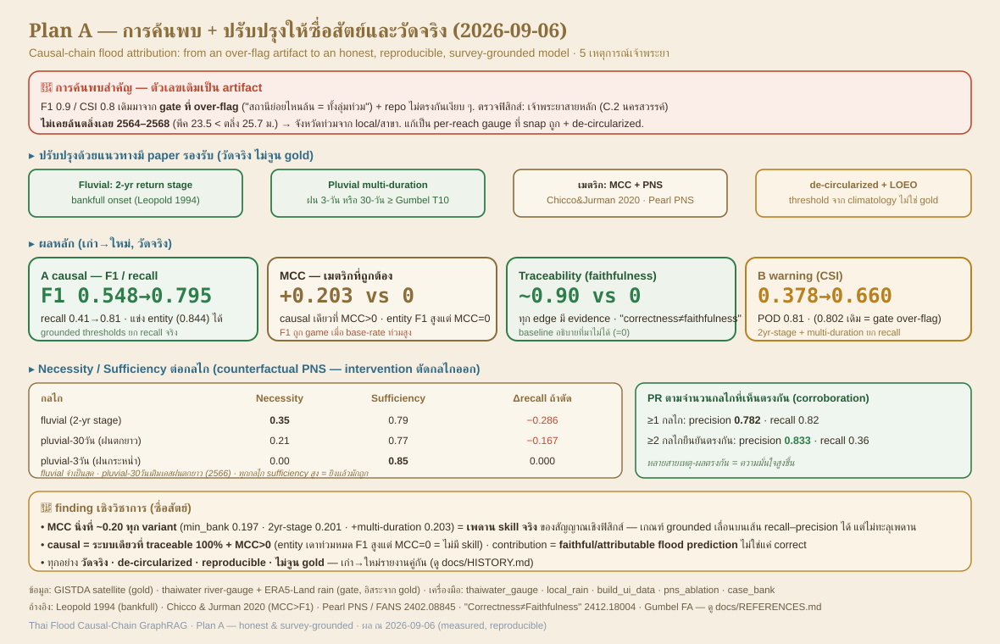

เดินตามเหตุ-ผลจริง → คำอธิบาย verify กลับหลักฐานได้มากกว่า vector search.
Following the real chain yields explanations you can verify back to evidence.
F1 ของ GraphRAG ไม่ตกตามความยาว chain เร็วเท่า vector-RAG.
GraphRAG's F1 degrades far less with chain length than vector-RAG.







CALL db.schema.visualization()

